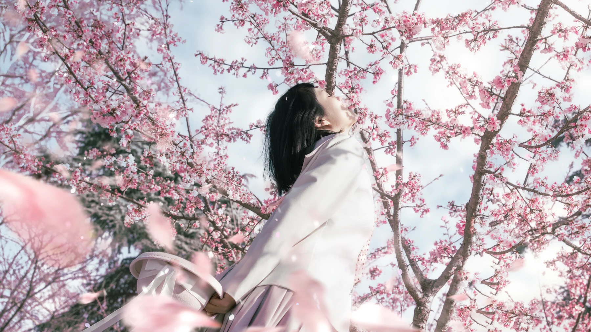
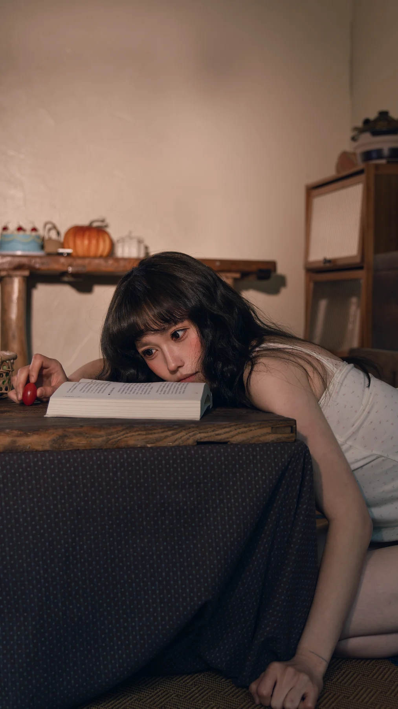
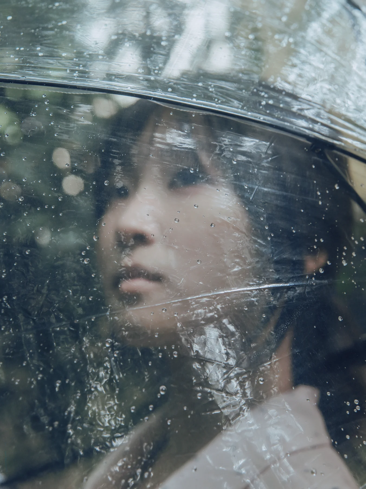
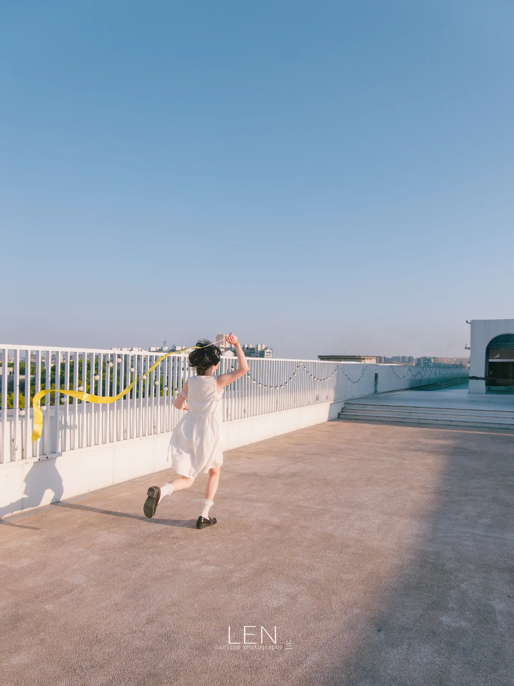
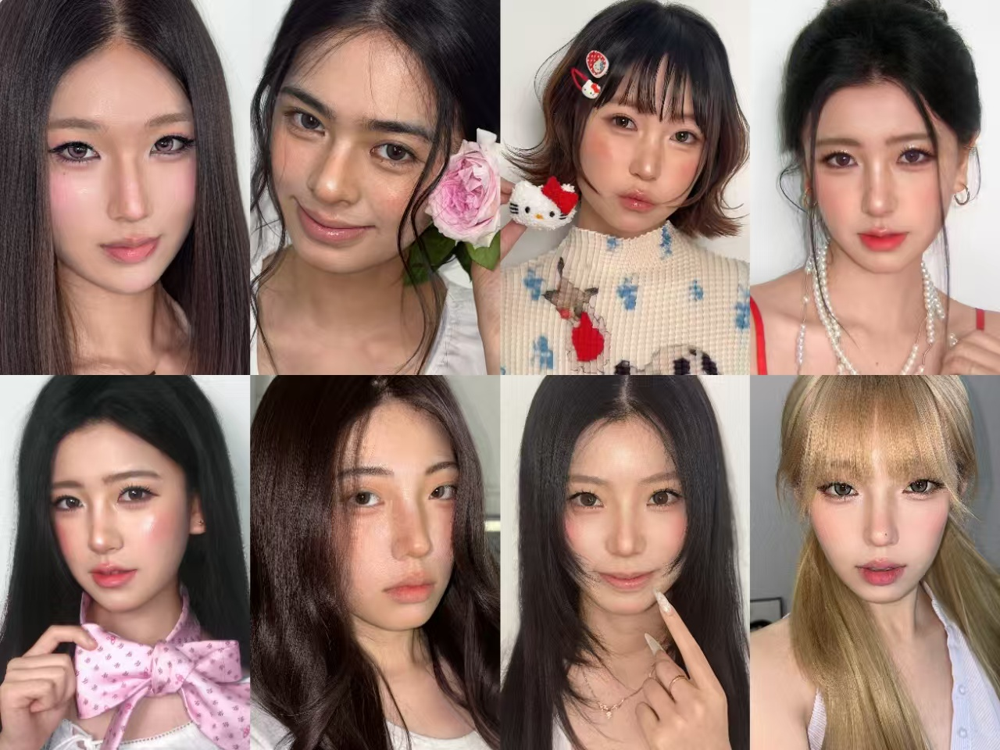
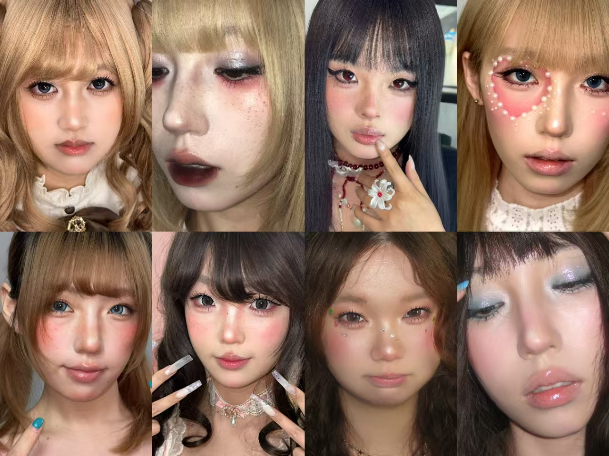

风格与策划
一起确认氛围、服装、妆造与地点，让拍摄方向先变得清晰。

LIGHT · EMOTION · STORY
我是阿兰 LEN，一名独立摄影师。
不只记录好看，更想留下你当时的感受。
DEPTH PARALLAX · SELECTED WORKS
我会更在意光落下来的方式、人物没有防备的一瞬，
向下滚动，沿二维画面向光影深处穿梭；点击任一作品进入完整故事。
我没有让人物去“摆进”树林，而是等枝叶、风和阴影慢慢把她围起来。画面里的轻微遮挡，让情绪比表情先被看见。
PORTRAIT · NANJING
我没有让人物去“摆进”树林，而是等枝叶、风和阴影慢慢把她围起来。画面里的轻微遮挡，让情绪比表情先被看见。

PORTRAIT · CITY
暖色房间、低下来的视线和桌面上的静物，构成一种不需要解释的停顿。我想把日常里最安静的几秒，拍成能被重新回忆的情绪。
WEDDING · DOCUMENTARY
这一组没有把青春拍成端正的纪念照，而是让奔跑、裙摆和失去控制的瞬间先发生。光落下来时，人物真正拥有了空间。
NIGHT · EMOTION
雨伞隔开了雨，却没有隔开光。我利用半透明材质和近距离的视线，把人物藏进一层柔软的光里，让画面像一段正在被保护的记忆。

COUPLE · STORY
玻璃、水汽与反射故意让画面不那么清楚。比起描摹一个人的轮廓，我更想留下她在雨后、在光线里被看见的感觉。

STUDIO · PORTRAIT
把人物放到很大的天空和留白里。画面不是要证明孤独，而是想让呼吸、风和向前跑的方向，都有足够的空间发生。
cos洛丽塔
植物系少女
中式古风
ABOUT THE PHOTOGRAPHER
独立摄影师 · 南京
本科就读于南京工程学院动画专业。擅长在日常生活里捕捉带有故事感和戏剧性的瞬间，让人物自然地成为画面的中心。
喜欢寻找并运用自然光影塑造人物特质，也会用后期光影继续讲述照片里的故事。
照片会褪色， 但那一刻的风、光与心跳， 应该被好好留下。
LEN STUDIO · NANJINGSERVICE · PORTRAIT EXPERIENCE
专注日系、故事感、情绪与电影感写真。无论选择哪一种服务，都会从你的气质与想法出发，完成风格沟通、现场引导和成片交付。
不需要先想清楚所有细节。告诉我你喜欢的画面、日期和预算，我会帮你判断更合适的拍摄方式。
一起确认氛围、服装、妆造与地点，让拍摄方向先变得清晰。
根据脸型、光线和人物状态，提供动作、视线与情绪引导。
保留真实肤质与光影，在约定时间内交付精修和有效底片。
外景¥1199
室内¥999
适合个人写真、生日记录与轻主题创作，提供简易策划，不含妆造。
外景¥2099
室内¥1899
适合电影感叙事与个人主视觉，包含妆造、完整策划，并按拍摄需要安排专门助理协助。
项目报价面议
拍摄安排沟通
适合商业内容、婚礼纪实、活动记录与需要长时间跟拍的项目。
两天内交片¥300
增加后期精修¥50 / 张
第三视角拍摄花絮¥200
双人或夜间拍摄加收 ¥400
完整情绪写真不含妆造，可另选化妆老师根据脸型与五官设计妆容，单独收费 ¥188 / 位，也可以自备妆造；深度私人定制写真已包含妆容与发型。暂不接三人及以上拍摄。


01档期建议提前 10 天预约；确认日期后支付 30% 定金，定金不退。
02两天内临时约拍属于加急，各服务价格乘以二；二次约拍优惠 ¥100。
03服装和场地需自备自费，我会提前协助判断颜色、款式、配饰与整体氛围。
04常规返图为 14 个工作日；车马费、道具费与场地费由客人承担。
05流程：咨询档期 → 定金留档 → 沟通策划 → 拍摄 → 付尾款 → 交付成片。
06作品可用于摄影师宣传；如需保密，版权费为拍摄费用的 30%。
BOOKING · PROCESS
提前 10 天预约更从容。档期确认后，支付定金即完成预约。
发送你喜欢的氛围、用途、期望日期和预算。
确认场景、服装、妆造、光线与拍摄节奏，形成清晰拍摄方案。
现场会提供动作和情绪引导，让不常拍照的人也能自然进入状态。
拍摄后成片和底片，保留真实肤质、光影和情绪。
LET'S CREATE SOMETHING REAL
欢迎带着一个模糊的想法来找我。我们可以从一首歌、一段文字、一件衣服，或某个你想记住的瞬间开始。
Sheyingshisiyan
摄影师 阿兰 抖音
中国 · 南京
工作日 12 小时内回复
START A CONVERSATION
LOCAL GALLERY EDITOR